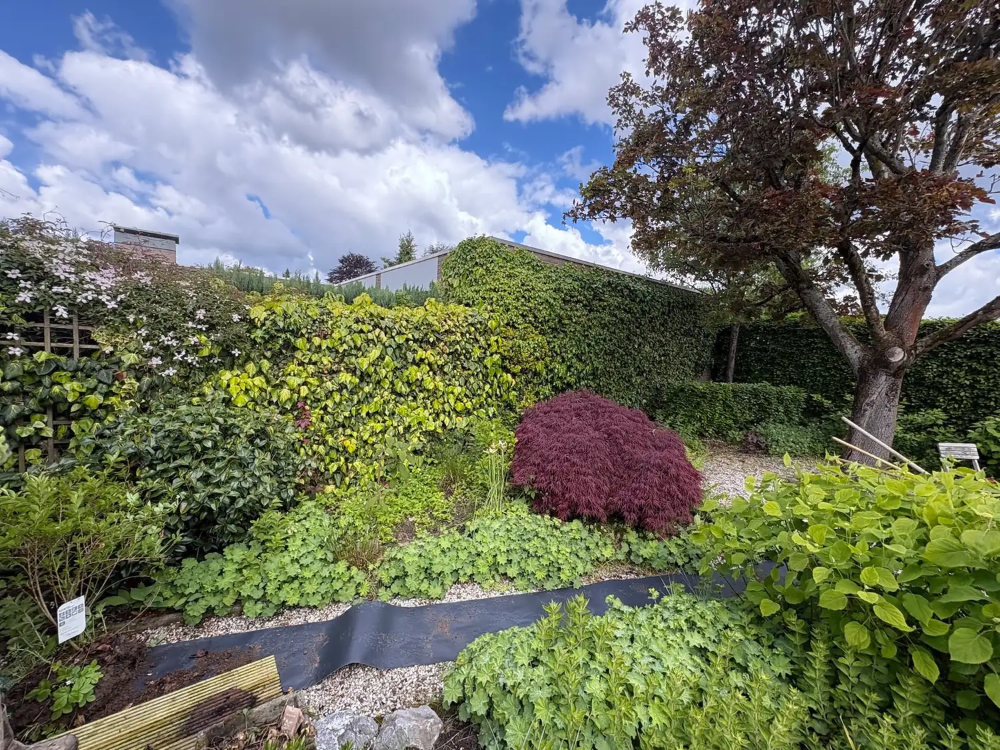

Wij houden jouw tuin het hele jaar door in topconditie, van snoeien en maaien tot borders bijhouden en opruimen.

Een mooie tuin vraagt om regelmatige aandacht. Tuinbazen combineert planten, kleuren en hoogtes tot een harmonieus geheel dat iedere seizoenswissel weerspiegelt. Of je nu kiest voor een strakke, moderne tuin of een volle weelderige beplanting, wij zorgen dat het altijd tip-top in orde is. Van snoeiwerk en gazononderhoud tot borders bijhouden en opruimen na stormen.
Vrijblijvend offerte aanvragenWij helpen je in al deze situaties, groot of klein, periodiek of eenmalig.
Onkruid, overwoekerde heesters en verwaarloosde borders vragen om ingrijpen.
Je wil een mooie tuin, maar het ontbreekt aan tijd om er zelf regelmatig mee bezig te zijn.
Je wil dat de tuin met elk seizoen mee verandert en er altijd op z'n best uitziet.
Verkeerd snoeien beschadigt planten, professioneel werk zorgt voor gezonde groei.
Van maaien en snoeien tot seizoensbeplanting, wij doen het complete tuinbeheer.
Regelmatig maaien en bemesten voor een strak, groen gazon het hele seizoen.
Vakkundig snoeien op het juiste moment voor een gezonde en mooie groei.
Onkruidvrije borders met de juiste beplanting voor kleur en sfeer.
Bladeren, takken en groenafval worden netjes afgevoerd na elke beurt.
We planten per seizoen passende bloemen en planten voor een dynamische tuin.
Alles wat je tuin nodig heeft, op vaste basis of op afroep.
Wij komen op vaste tijden langs, zo weet je altijd wanneer je tuin wordt verzorgd.
Wij weten precies wanneer en hoe te snoeien voor een gezonde, bloeiende tuin.
Jij geniet van je tuin, wij zorgen dat hij er altijd tip-top bij staat.
Vraag vandaag nog vrijblijvend een offerte aan. Wij reageren binnen één werkdag.
Offerte aanvragen →